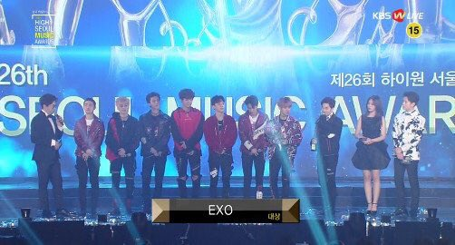

- 백현이를 알아보쟈
- 백현이의 음원활동 (개인)
- 백현이의 수상내역 (개인)
백현이의 수상내역

2016년도
4월 10일 제4회 《인위에타이 V차트 어워드》 올해의 최고 인기가수상 한국부문
11월 16일 제1회 《아시아 아티스트 어워즈》 드라마 부문 남자 인기상 (달의 연인 - 보보경심 려)
11월 19일 제8회 《멜론뮤직어워드》 R&B/SOUL부문 (수지, 백현 - Dream)
12월2일 제18회 《Mnet 아시안 뮤직 어워즈》 베스트 콜라보레이션상 (수지, 백현 - Dream)
12월31일 《SBS 연기대상》 뉴스타상
2017년도
1월 13일 제31회 《골든디스크 시상식》 음원본상 (수지, 백현 - Dream)
3월1일 제12회 《Soompi Awards》 베스트 콜라보레이션상 (수지, 백현 - Dream)
3월1일 제12회 《Soompi Awards》 베스트 드라마 OST (EXO-CBX - 너를 위해)
3월1일 제12회 《Soompi Awards)》 베스트 아이돌 연기자상